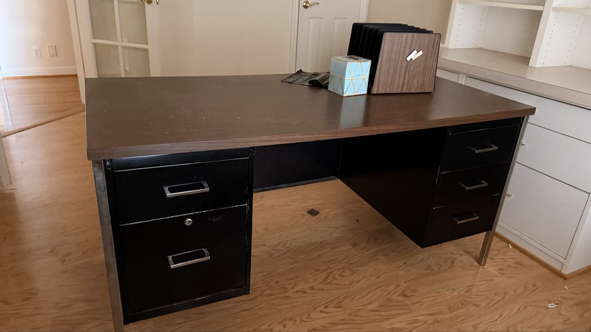

A quick word about the 👍
Every section carries one small thumbs-up at its foot. If a section earns its place in the paper, tap it — one tap is one vote for keeping that section, counted anonymously, no accounts or names. You’ll see “Counted — thanks!” beside the button, and the running totals are shown in the footer. One vote per reader per section; the board clears at day’s end.
🚨 Need to Know — the Safety Wire
Bayshore: Coastal Flood Warning updated this morning — peak tide today at 10:49 AM. NWS San Francisco updated the alert Wednesday, November 25 at 5:53 AM PT (in effect through Thursday, November 26 at 4:00 PM), covering the San Francisco Bay Shoreline, including Alviso: significant coastal flooding with up to 2.7 feet of inundation possible, predictions approaching the highest tide ever recorded, with up to 1.5 feet of surge enhancing the tide. Today’s high tide is 8.5 feet at 10:49 AM; Thursday’s is 8.0 feet at 11:38 AM. Do not drive around barricades or through water of unknown depth. Source: NWS — San Francisco Bay Shoreline (CAZ508)
No active alert at the Lenwood point at the morning check. The NWS active-alerts feed for the Lenwood point, checked at 5:54 AM PT, returned no active alerts. Source: NWS — active alerts for the Lenwood point
Roads at the morning check: valley freeways clear. Caltrans highway conditions at 5:55 AM report no traffic restrictions in the central area on I-280, I-880, I-680, SR-87 and SR-85. The US-101 central-area listing’s only note is a high wind advisory at the San Francisco/Marin county line, where travel is not recommended for campers, trailers or permit loads. Sources: Caltrans — I-280 · Caltrans — US-101 · Caltrans — I-880 · Caltrans — SR-87 · Caltrans — SR-85
County picture: no evacuation order or warning verified this morning. No evacuation order or warning for San Jose was verified in the AlertSCC / City of San Jose / SJFD / SJPD public feeds checked this morning, and no new Valley Water flood notice was verified beyond the bayshore NWS alert above.
Transit: VTA’s free warming-center rides end today; Thanksgiving runs a Sunday schedule. VTA offers free fares to or from Santa Clara County warming centers through today, Wednesday, November 25. On Thanksgiving Day, Thursday, November 26, VTA service operates on a Sunday schedule and its offices are closed. Sources: VTA — service alerts
Storm readiness, standing. Valley Water offers free filled sandbags for county residents at its five sites (Nov 1–Apr 15 season). Report creek debris to Valley Water at (408) 630-2378.
🏔️ Hill & Mountain Roads — the crossings, live
The mountain roads out of the valley, as the cameras see them right now — and, for the climbs Caltrans keeps no camera on, the road report that carries their word.


Highway 9 — Saratoga over the Santa Cruz Mountains to Santa Cruz, through the redwoods. No Caltrans camera on the climb; closures and one-way control ride in the Caltrans road report.
Skyline Blvd (SR-35) — the ridge-top run along the Santa Cruz Mountains, SR-17 to SR-92. No Caltrans camera on the ridge; its word rides in the Caltrans road report.
Mt. Hamilton Road (SR-130) — Alum Rock Ave up the switchbacks to the Lick Observatory summit. No Caltrans camera on the mountain; closures ride in the Caltrans road report.
Highway 92 — San Mateo over the hill to Half Moon Bay. Caltrans' SR-92 cameras watch the San Mateo Bridge, not the hill — so no picture here rather than a borrowed one; the climb's word rides in the Caltrans road report.
Niles Canyon (SR-84) — Fremont through the canyon to Sunol, beside Alameda Creek. No Caltrans camera in the canyon; its word rides in the Caltrans road report.
✒️ From the Editor's Desk
Why This Paper Is Free
People ask, now and then, how The Lenwood Gazette can be free — no paywall, no ads. The short answer is that this paper isn’t a business. It’s a neighbor project. Its job is to serve this neighborhood: the road work and the city meetings, the lost dogs and the found ones, what’s on at the community center this weekend. A paywall would work against that job. A paper the neighbors can’t read can’t serve the neighbors.
The no-ads part is the same decision. Nobody pays this paper’s bills but me, and that’s deliberate. If advertisers paid them, the advertisers would be the customer, and you would be the inventory — your attention, packaged and sold. Around here, readers aren’t inventory. They’re neighbors. So there are no ads, and there’s no tracking either. The little seal on the masthead says it in one line: we count readers — we never track them. We do count. A paper should know whether anyone’s reading, and which sections earn their thumbs-up. But the counting is done without watching: no names, no accounts, no following anybody around the internet. The count tells us a neighbor stopped by. It never tells us which one.
Free to read isn’t free to make, and I’d rather be honest about that than pretend otherwise. Hosting, tools, and hours are real costs, and I cover them. There’s a tip jar for readers who’d like to help with those costs — some do, and I’m grateful every time. But hear the promise plainly: this paper stays free whether anyone tips or not. The tip jar is a thank-you, never a pitch. The Gazette was free when it started, it’s free this morning, and free is how it stays.
— Dave Dell’Aquila, Editor

This paper sets no cookies.
Struck through by the editor — permanently.
🌦️ Weather Events — the sky as news
The king-tide peak is today; the rain returns Sunday. The weather event of the week is the bayshore flood sequence in the Safety Wire: the Warning updated today, November 25 at 5:53 AM runs to Thursday 4:00 PM, peaking at 8.5 feet at 10:49 AM today. For Lenwood itself the NWS forecast is quieter: today, Wednesday, November 25 is mostly sunny near 66°F after overnight clouds and a slight (20%) early rain chance; tonight is mostly cloudy with patchy fog after midnight, low near 47°F. Thanksgiving Day, Thursday, November 26: patchy fog before 10:00 AM, then mostly cloudy near 64°F. Friday, November 27: partly sunny near 65°F. Saturday, November 28: partly sunny near 66°F, with a chance of rain after 4:00 AM Saturday night. Sunday, November 29: rain, mostly cloudy near 64°F, continuing Sunday night — the weekend’s wet day, and the one that matters for Sunday’s outdoor meets (see Car Shows). Sources: National Weather Service — forecast for the Lenwood point · NWS — Bay Shoreline alerts
Today in the Valley — Wednesday, November 25
Tonight: Barracuda host Coachella Valley at Tech CU Arena, 7:00 PM. The San Jose Barracuda take on the Coachella Valley Firebirds in AHL play at Tech CU Arena (1500 S. 10th St). Sources: Coachella Valley Firebirds — Wednesday at San Jose, 7:00 PM · South Bay Today — events on Wednesday, November 25, 2026
Tonight: Los Gemelos de Sinaloa at the San Jose Civic, 8:00 PM. The Gemeliza Tour brings the música mexicana duo to the San Jose Civic (145 W. San Carlos St) tonight, Wednesday, November 25 at 8:00 PM, per Visit San Jose’s San Jose Theaters listing carried in this paper yesterday and confirmed in today’s listings. Source: Visit San Jose — Los Gemelos de Sinaloa at the San Jose Civic, Wed Nov 25
Holiday Lights tonight at Discovery Meadow, 4:30–10:30 PM. San Jose Holiday Lights runs nightly through January 1 at Discovery Meadow (330 W. San Carlos St), last entry 10:00 PM, per its official tickets page. Source: San Jose Holiday Lights — tickets & hours · The Gazette’s Christmas Lights Guide
Library day: Thanksgiving storytimes and crafts. San José Public Library listings for today, Wednesday, November 25 include a Thanksgiving Storytime and Craft Extravaganza at Joyce Ellington (11:00 AM–12:30 PM), Family Storytime at Calabazas (10:30 and 11:15 AM), Baby Lap-Sit at Santa Teresa (11:00 AM) and Indoor Family Storytime at Pearl Avenue (11:00 AM), with Family Movie Club: Wonder at Joyce Ellington at 4:00 PM. All library locations are closed Thursday, November 26 and Friday, November 27 for Thanksgiving. Sources: San José Public Library — events · South Bay Today — Thanksgiving Storytime at Joyce Ellington, Nov 25
Overhead tonight: Uranus at opposition, behind a mostly cloudy sky. The Moon is a waning gibbous, about 97–99% lit a day past full, and Uranus reaches opposition tonight — see the Star Chart in the sidebar. Tonight is mostly cloudy with patchy fog after midnight, so viewing depends on a clearing.
The Week Ahead
Wed Nov 25 — the tide peak, then sun. Mostly sunny near 66°F; bayshore tides peak at 8.5 feet at 10:49 AM under the Coastal Flood Warning, which runs to Thursday 4:00 PM. Barracuda at Tech CU Arena, 7:00 PM; Los Gemelos de Sinaloa at the San Jose Civic, 8:00 PM; Holiday Lights at Discovery Meadow. VTA’s free warming-center rides end today.
Thu Nov 26 — Thanksgiving Day. Patchy fog before 10:00 AM, then mostly cloudy near 64°F. The Warning ends at 4:00 PM; Thursday’s high tide is 8.0 feet at 11:38 AM. VTA runs a Sunday schedule and its offices are closed; San José Public Library locations are closed Thu–Fri. San Jose Cars’ weekly Thursday gathering at Mojo’s Hamburgers, 1401 Foxworthy Ave, is listed from 3:00 PM — a holiday, so confirm before going (see Car Shows).
Fri Nov 27 — Christmas in the Park opens. Partly sunny near 65°F. Christmas in the Park’s downtown season runs November 27–January 1, daily noon–10:00 PM, per the guides linked at the top of this edition.
Sat–Sun, Nov 28–29 — the Toy Drive, then a wet Sunday. Saturday: the Holiday Toy Drive at the Santa Clara County Fairgrounds (see Car Shows), partly sunny near 66°F. Sunday: rain expected, near 64°F, with the Lafayette and Moraga cars & coffee meets listed that morning — rain cancels, per their listings.
Mon Nov 30 — a chance of rain. Mostly cloudy near 62°F with a chance of rain, per the NWS extended forecast at morning press time.
🏁 Car Shows — the Bay Area circuit
Sat Nov 28 — Holiday Toy Drive — BLVD Kings Car Club San Jose · Santa Clara County Fairgrounds Lot C / Gateway Hall, 344 Tully Rd, San Jose · 7:00 AM – 6:00 PM (the Fairgrounds’ own listing shows the Gateway Hall gathering 12:00–6:00 PM). BLVD Kings San Jose and Viejitos Car Club – Silicon Valley host; new, unwrapped toys requested; all car clubs and solo riders welcome; photos with Santa, raffles and a 50/50. Free for spectators. Sources: CarCruiseFinder · Santa Clara County Fairgrounds — Holiday Toy Drive · RoaringShifts — Fairgrounds Holiday Toy Drive
Sat Nov 28 — Orinda Cars — cars & coffee · 204 Village Square, Orinda · 8:00–10:00 AM. A second- and fourth-Saturday gathering; this date follows the regular schedule but has not been confirmed separately — check for holiday, weather or venue changes before going. Source: California Cars & Kulture.
Sat Nov 28 — San Juan Bautista Cars — cars & coffee · Mariposa & 3rd Street, San Juan Bautista · 8:00–11:00 AM. A second- and fourth-Saturday gathering for cars and trucks; this date follows the regular schedule — check for weather or holiday changes before driving. Source: California Cars & Kulture.
Sun Nov 29 — Pit Stop, Cars, Coffee & Pastries — Lafayette · 3466 Mount Diablo Blvd, Lafayette · 8:00–10:00 AM. Le Pit Club cars & coffee, free and open to the public; no burnouts or revving, and rain cancels — and rain is forecast Sunday, so check before going. Source: RoaringShifts / Le Pit Club.
Sun Nov 29 — Moraga Pit Stop · 380 Moraga Rd, Moraga · 10:00 AM – noon. Le Pit Club cars & coffee, free and open to the public; rain cancels — and rain is forecast Sunday, so check before going. Source: RoaringShifts / Le Pit Club.
Sun Nov 29 — Anacarcrew Fam Annual Toy Drive — San Leandro · San Leandro · 10:00 AM. Listed in RoaringShifts’ this-week-near-San-Jose roundup for Sunday, November 29; its name runs unlinked this morning because no organizer page for it was verified in this sweep — the edition report names it as unlinked. Source: RoaringShifts.
Thu Nov 26 — San Jose Cars — weekly Thursday gathering · Mojo’s Hamburgers, 1401 Foxworthy Ave, San Jose · from 3:00 PM (advertised 8:00 PM finish). A weekly listing falling on Thanksgiving Day — confirm with the organizer before going. Source: California Cars & Kulture.
Sun Dec 13 — Cars & Croissants on The Row · Santana Row, San Jose · 9:00 AM – noon. Carried from the previously verified listing; its name runs unlinked this morning because no organizer page for the December date was re-verified in today’s sweep — the edition report names it as unlinked.
The Community Wire
No new pertinent post from an official or public Facebook page was verified at morning press time — the wire is honest when it is empty. Summaries here are always in our own words, attributed, and linked to the original.
🎁 Free Stuff
FREE — vintage steel tanker desk. A classic mid-century tanker, built like its name: a heavy steel double pedestal with five drawers — a shallow drawer over a deep locking file drawer on the left, three drawers on the right — chrome pulls and legs, and a dark woodgrain laminate top. It measures 60″ long × 30″ deep × 30″ high. Used and solid; the top is dusty with light scuffs from storage, and the items sitting on it in the office photo aren’t included. Fair warning: it’s heavy — bring help and a dolly.



First confirmed pickup takes it. Pickup at 18231 Llagas Creek Dr, Morgan Hill — arrange a time through the Facebook Marketplace listing. Running at the publisher’s direction; the same desk is also offered in our sister papers.